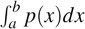
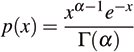
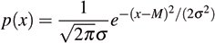

13.7. Continuous DistributionsThe specifications for the continuous distributions in the TR1 library give the probability density function for the distribution. Given a probability density function p(x), the probability that a result will be in the closed range [a,b] is . As mentioned earlier, the engine that you pass to the function call operator of a continuous distribution must return values in the closed range [0.0, 1.0]. 13.7.1. exponential_distributiontemplate < class RType = double >
class exponential_distribution {
public :
// distribution interface
typedef RType input_type ;
typedef RType result_type ;
explicit exponential_distribution (
const result_type & L0 = result_type (1)) : L( L0) {}
void reset ();
template < class Eng >
result_type operator() ( Eng & eng);
// type-specific members
RType lambda () const { return L ; }
// exposition only:
private :
RType L;
};
Instances of the template exponential_distribution produce random sequences of values of type Rtype, all of which are greater than 0. For a process whose state changes at intervals whose average duration is L, values within the random sequence in the interval x,x + Δx occur with probability equal to the probability that the process will change state within an interval whose duration is between x and x + Δx. 13.7.2. gamma_distributiontemplate < class RType = double >
class gamma_distribution {
public :
// distribution interface
typedef RType input_type ;
typedef RType result_type ;
explicit gamma_distribution (
const result_type & a0 = result_type (1)) : A( A0) {}
void reset ();
template < class Eng >
result_type operator() ( Eng & eng);
// type-specific members
RType alpha () const { return A ; }
// exposition only:
private :
RType A;
};

Instances of the template gamma_distribution produce random sequences of values of type Rtype, all of which are greater than 0. For a process whose state changes at intervals whose average duration is 1, and when A is an integer, values within the random sequence in the interval x,x + Δx occur with probability equal to the probability that the process will change state A times within an interval whose duration is between x and x + Δx.[20] Thus, values in the sequence generated by an instance of the template gamma_distribution with A == 1 will have the same distribution as values in the sequence generated by an instance of the template exponential_distribution with L == 1.
13.7.3. normal_distributiontemplate < class RType = double >
class normal_distribution {
public :
// distribution interface
typedef RType input_type ;
typedef RType result_type ;
explicit normal_distribution (
const result_type & M0 = 0, const result_type & S0 = 1)
: M(M0), S(S0) {}
void reset ();
template < class Eng >
result_type operator() ( Eng & eng);
// type-specific members
RType mean () const { return M ; }
RType sigma () const { return S ; }
// exposition only:
private :
RType M;
RType S;
};

Instances of the template normal_distribution produce random sequences of values of type RType. The values occur with probabilities given by the normal distribution with mean value M and variance S*S. 13.7.4. uniform_realtemplate < class RType = double >
class uniform_real {
public :
// distribution interface
typedef RType input_type ;
tpyedef RType result_type ;
explicit uniform_real (
RType min0 = RType (0), RType max0 = RType (1))
: N( min0), X( max0) {}
void reset ();
template < class Eng >
result_type operator() ( Eng & eng);
// type-specific members
result_type min () const { return N ; }
result_type max () const { return X ; }
// exposition only:
private :
RType N;
RType X;
};
Instances of the template uniform_real produce uniformly distributed random sequences of values of type RType, all of whose values are greater than or equal to the specified minimum value and less than the specified maximum value. |